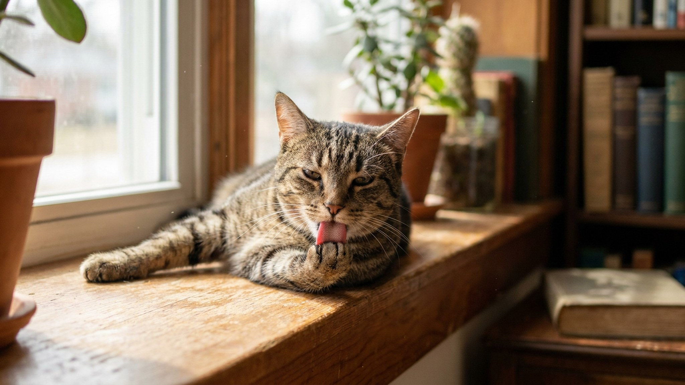

Кошка лизнула вас — и ощущение как наждачная бумага. Это не случайность. На языке кошки около 300 микроскопических сосочков в форме полых крючков. В 2018 году исследователи Технологического института Джорджии выяснили, как именно они работают — и это переосмыслило понимание кошачьего груминга. А ещё важнее — что делать, если кошка вдруг перестала вылизываться.
🐾 Всё о вашем питомце — в одном приложении
AI-ветеринар, дневник, напоминания о прививках и уходе. Установите AnimaLife — это бесплатно, в Telegram и MAX.
Шершавость языка кошки создают нитевидные сосочки (filiform papillae) — крошечные конические выросты из кератина. Под микроскопом они выглядят как загнутые крючки, направленные назад к горлу. Именно эта форма создаёт ощущение «тёрки» при прикосновении.
Похожие структуры есть у всех крупных кошачьих — львов, тигров, гепардов. Эволюция сохранила этот инструмент на протяжении миллионов лет, что говорит о его высокой функциональности.
До 2018 года считалось, что кошачьи сосочки работают как обычная щётка — механически расчёсывают шерсть. Исследователи Технологического института Джорджии (Alexis Noel и David Hu) обнаружили нечто важное: сосочки полые внутри. Форма — USPA (U-shaped papillae) — это микроскопические U-образные структуры с открытым концом.
Как это работает: кончик каждого сосочка набирает слюну. При движении языка по шерсти слюна транспортируется по капиллярным каналам прямо к основанию волосков — туда, куда внешнее увлажнение почти не добирается. Это делает кошку невероятно эффективным самоочищающимся механизмом.
Практические функции этой системы:
Взрослая домашняя кошка посвящает груминга от 30 до 50% времени бодрствования. Это в среднем 3–5 часов в день. Для большинства хозяев это кажется чрезмерным, но это абсолютная норма.
Грумминг выполняет не только гигиеническую функцию. Он также:
Чрезмерный грумминг — более тревожный сигнал, чем отсутствие. Если кошка вылизывает одно место до покраснения или залысины — это может указывать на зуд, дискомфорт в определённой области или поведенческий стресс. Обсудите это с ветеринаром.
Снижение или прекращение груминга — один из первых и наиболее заметных признаков того, что кошке некомфортно. Это тот случай, когда изменение в поведении стоит воспринять как сигнал.
Возможные причины, которые стоит обсудить с ветеринаром:
Практическое правило: если кошка старше 7 лет стала хуже выглядеть (тусклая шерсть, колтуны, которых раньше не было) — запишитесь к ветеринару. Это не косметическая проблема.
🐾 Спросите AI-ветеринара прямо сейчас
AnimaLife — приложение, где AI-ветеринар отвечает на вопросы о кошке или собаке 24/7. Бесплатно, без записи и очередей.
🐾 Понравился разбор?
Подпишитесь на канал — каждый день разбираем по одному тревожному симптому у кошек и собак: что в пределах нормы, а когда пора к врачу. Подпишитесь, чтобы не пропустить разбор, который может спасти здоровье вашего питомца.
Да, и вот почему: грумминг кошки эффективен, но не полностью решает проблему выпавшей шерсти. Она попадает в желудок, накапливается и образует комки, которые кошка срыгивает — это нормально, но в умеренных количествах. При избыточном линьянии (весна, осень, жаркое лето) помощь хозяина снижает количество проглоченной шерсти.
Расчёсывание также помогает заметить изменения кожи, паразитов, ранки или уплотнения, которые иначе скрыты под шерстью.
Шершавый язык — одна из самых изящных биологических конструкций в мире домашних животных. 300 микрополых крючков, слюна-помпа и 3–5 часов ежедневной работы — и кошка поддерживает себя в идеальном состоянии. Когда эта система даёт сбой — это заметно. И это сигнал действовать.
Материал носит информационный характер и не заменяет очную консультацию ветеринара.